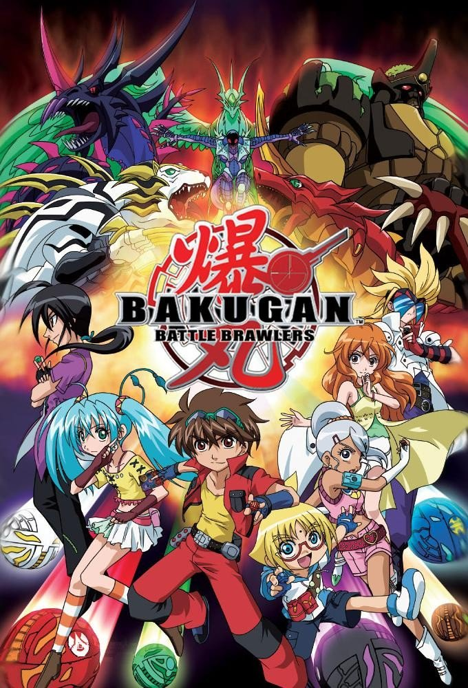
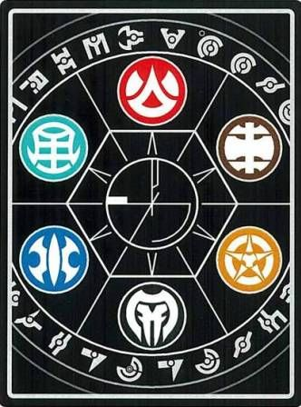
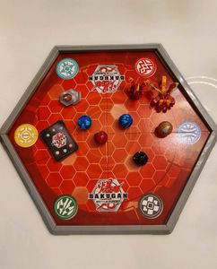
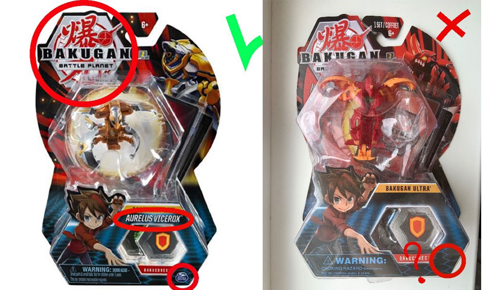
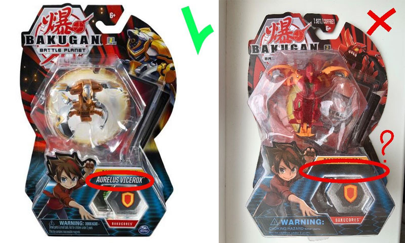
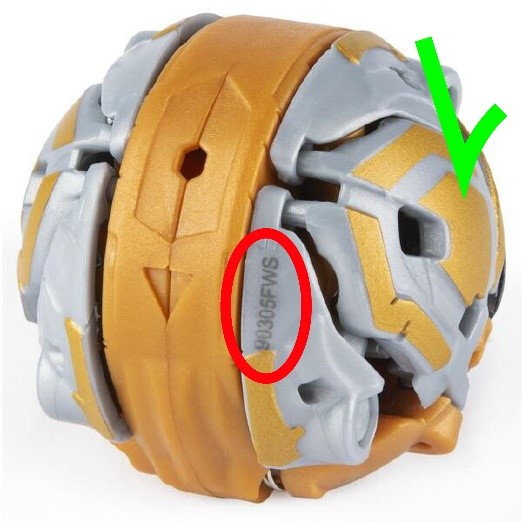

BAKUGAN
The return of the legend
What is Bakugan?
Bakugan Battle Brawlers is a Japanese anime adventure television series, the first season of which was released in 2007. the foutth season was released in 2011. But with time and the growing popularity of the series, a board game. video game and toys also appeared.
Bakugan anime
In total, 4 seasons of the series were released, which were shown in many countries of the world. This series tells a long and complex story about the lives of humans and Bakugan.
Bakugan species
The Bakugan Attributes are representative of the Bakugan's elements. Vestroia's system was split into six planets of fire, water, wind, earth, light, and darkness. There are a few Bakugan who don't have an attribute and others who have an uncontrollable and forbidden power.
Also Trap Bakugans appear in the second season.
Board game
Each player takes turns shooting the marble-like Bakugan at the metal cards which have been placed to make up the play area. If the Bakugan lands at the right spot on the card, it will spring open and stand on the card, taking control of the card. When two Bakugan stand on the same card, they fight, using their strength, plus bonuses on the card they are attempting to control. Play continues until all areas are controlled, or one player's Bakugan have been eliminated. The winner is determined by the values of the areas taken, and other bonuses accumulated in play.
(But if you don't like these rules, you can create your own at any time!)
Beware of fakes!
1.The logo indicated on the packaging must be original - look one to one, as on the official website https://bakugan.com.
2.On the box with the original Bakugan toy, on the front side of it, the name of the Bakugan you are buying will always be written.
3.Any original Bakugan has serial number.
4.Original Bakugan are exclusively sold in packs of 1, 3 or 5.
5.Original toy musnt not have uneven contours, parts that have moved out, uneven coloring, too ìpoisonousî colors and any smell.
  I got to know it
Learned the art of "Bakugan"!
It came to me a long time ago:
When there was no you, me,
And indeed anyone
In this world.
Let their name be exalted
In Vestroe.
Let everyone know the meaning of them
words.